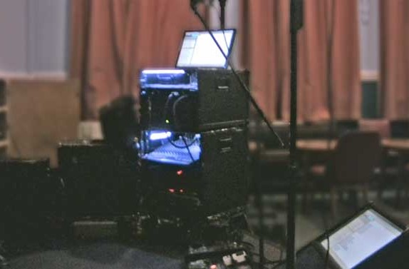
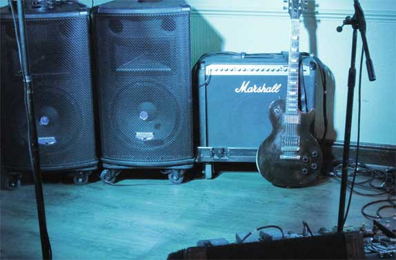

Website last updated Sunday June 1st 2025 ...hit refresh to update!

The two lyric monitors on stage

The backline on stage
About this website...
About this website...
This website is for singers to access the backing tracks
Information:
The first section is a list of all the songs we've done i.e. our full repertoire
Including links to the uploaded backing tracks
We are not a tribute act and we don't try to copy a song perfectly; we do our own version.
The songs are mostly medium or uptempo for dancing.
In some cases the songs have been re-arranged and/or simplified for live performance
This song list is a collaborative effort
Generally the songs are in good, easy female-friendly keys, so they are as easy as possible to sing without straining!
Some of the songs have recorded BV's in the chorus
Live Setup:
At gigs we use audio backing tracks for the Bass, Drums and Keyboards played from a computer, Guitar is played live
We also use backline amps for the backing tracks. The PA is only used for vocals (see image below)
Every song we do also has the LYRICS, the bar counts, intros, solos and outros programmed into it, displayed on computer screens while it plays through
We have two screens on stage (see image below): one on the computer itself and the other as part of the floor monitor foldback wedge at our feet
There is no need for lyric books on stage and no need to learn all the lyrics or the arrangement before doing a song live. This makes it as easy as possible to do live gigs
To listen to the songs:
This music icon indicates a song with a link to an associated backing track. Just click the link and the song will open in a new tab as a video on YouTube. It will show the lyrics etc..
These tracks are generally the same backing tracks that we use live at gigs BUT for the YouTube video they have been heavily compressed and have a reduced file size so they are quicker to load but with much lower quality!
A few of the songs have a link to another version of the song for reference
The tracks on this website are not demos, this is just a sort of easy access rehearsal site!
The songs I sing are in blue and are mostly not uploaded
I haven't uploaded all of our songs ...yet!
The repertoire needs updating: there are few songs from the 2020's. Suggestions are very welcome!
Repertoire and Backing tracks
The Fifties
Rock & Roll, Rockabilly, Swing, Jive, Ballads, Big Band, Doo Wop etc..